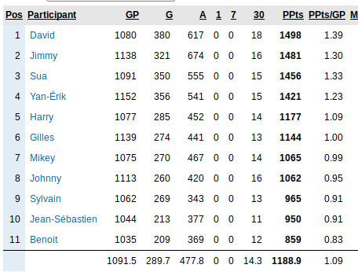

Masse Salariale
La masse salariale est de 89M US.
Après la remise de l'alignement final (13 Octobre 2018), la masse salariale grimpera à 93M US.
Tous les joueurs de l'équipe comptent sur la masse salariale sauf les joueurs dans le backstore.
On compte le salaire du joueur et non son "cap hit".
Pour les joueurs qui sont à leurs premier contrat, un joueur doit avoir joué 10 matchs durant l'année courante pour que son salaire soit comptabilisé sur la masse salariale, sinon on comptabilise 500k$ sur la masse.
Si un pooler dépasse la masse salariale durant la saison ou s'il repêche plus de joueurs que la limite permise (30), il doit jeter un joueur au vidange pour respecter la masse salariale et en plus, il reçoit la première sanction qui s'applique de la liste ci-dessous:
On compte les 9 meilleurs avants, les 4 meilleurs défenseurs et 2 gardiens; donc vous devez avoir au moins 15 joueurs qui jouent dans la LNH (9A, 4D, 2G).
Pour tous joueurs: 1 but = 2 points, 1 passe = 1 point.
Pour les gardiens: 1 victoire = 2 points, 1 blanchissage = 3 points, défaite en prolongation ou fusillade = 1 points.
Quand on échange un joueur, les points accumulés par le joueur suivent le joueur dans sa nouvelle équipe.
La date limite pour remettre la liste de protection est le 29 septembre 2018.
La date limite des transactions pour la saison 2018-2019 est le 12 janvier 2019.
La date limite pour sortir un joueur du backstore pour la saison 2018-2019 est le mardi 5 février 2019. Vouz pouvez sortir un maximum de 2 joueurs du backstore et vous devez mettre un joueur au ballotage pour chaque joueur qui sort du backstore.
On ne peut pas échanger des choix qui vont au delà de deux ans.
Liste de protection: 7 avants, 3 défenseurs, 1 gardien + 2 joueurs au choix + tous les joueurs ayant joué moins de 200 matchs.
À la fin du prochain repêchage, chaque équipe aura 30 joueurs et une RÉSERVE (backstore) de jusqu'à 8 joueurs qui ne seront pas comptabilisés NI sur la masse salariale NI pour les points. Par contre, on pourra échanger les joueurs dans le backstore. Toutefois, l'équipe qui recevra ce joueur devra le comptabiliser sur sa masse salariale. De plus, si on échange un joueur de la réserve, on ne pourra en introduire un nouveau sur cette liste de réserve.
Lottery PICK: À la fin de la saison, les 5 derniers du classement poolbino seront jumelés respectivement aux 5 dernières équipes du classement final de la saison régulières de la LNH pour la lotterie du repêchage. Le gagnant de la loterie aura le privilège de repêcher au premier rang lors du prochain repêchage. SEUL le gagnant de la loterie peut changer de position au repêchage et pour la première ronde seulement.
|
Date |
Pooler1 |
Pooler2 |
|
3-mai-2019 |
ATTENTION! Cette table n'est plus MAJ. Voir Page 2019-2020 |
ATTENTION! Cette table n'est plus MAJ. Voir Page 2019-2020 |
|
3-mai-2019 |
Sua: Antti Rantta |
Sylvain: Choix 5e ronde Jean-Seb 2019 |
|
3-mai-2019 |
Jean-Seb: J.Saros, N. Hanifin, J.Pavelski et J.Neal |
Yan-Erik: J. Schwartz |
|
3-mai-2019 |
Harry: J. Spurgeon |
Yan-Erik: N. Hanifin |
|
3-mai-2019 |
Johnny: choix 6e ronde de YE 2019 |
Yan-Erik: S. Varlamov |
|
3-mai-2019 |
Yan-Erik: choix 1ere ronde de Jimmy 2019 |
Sylvain: Martin Jones |
|
3-mai-2019 |
Harry: 2e ronde de Mikey 2020 |
Mike: choix 3e ronde Harry 2019, choix 5e ronde (Ben) 2019, choix 3e ronde Harry 2020 |
|
15-fev-2019 |
Repechage Ballotage: Cam Talbot (Benoit), Perte de 3e choix 2019 (Mike), Mathieu Joseph (Sylvain), Wayne Simmonds (Gilles), Eric Staal (Gilles) |
|
|
12-jan-2019 |
Harry: J. Allen, A. Cirelli et A. Nylander |
Jimmy: Gardiner, Mrazek, choix de 5, 6, 7e ronde de Harry 2019 |
|
12-jan-2019 |
Sua: A. Panirin, choix de 3e ronde 2019, choix de 5e ronde 2019 |
Jean-Seb: R. Nugent-Hopkins, V. Husso, choix de 1ere ronde 2020, choix de 2e ronde 2020 |
|
12-jan-2019 |
Harry: N. Hanifin, R. Fabbri, choix de 3e ronde 2020, choix 5-6-7 2019 |
Benoit: M. Granlund, choix de 2e ronde 2020 (Ben) |
|
11-jan-2019 |
David: Patrick Kane, Kyle Clague (backstore) |
Gilles: Choix première ronde 2019 de David, J. Kyrou, J. Marchessault, J. Muzzin, D. Larkin (Backstore) |
|
9-jan-2019 |
Benoit: Teuvo Teravainen et Timothy Liljegren |
Harry: Troy Terry, choix de 2e ronde 2020 |
|
9-jan-2019 |
Sua: Cam Atkinson |
Harry: M. Granlund, Carter Hutton, choix de 4e ronde 2020 |
|
8-jan-2019 |
Sua: Jake DeBrusk , choix de 3e ronde 2019 (Jimmy) |
Benoit: Colin White , choix de 4e ronde 2019 |
|
8-jan-2019 |
Sua: Colin White |
Mike: Nick Schmaltz , Cory Schneider (BS) |
|
7-jan-2019 |
Harry: Cam Atkinson (BS) |
Gilles: Henri Jokiharju, Kale Clague(BS), 3e ronde 2019 (Sua) |
|
7-jan-2019 |
Yan-Erik: J. Saros , J. Neal et un choix de 3e ronde (YE) |
Benoit: I. Provorov, J. Roslovic et R. Smith |
|
7-jan-2019 |
Yan-Erik: M. Ekholm et R. Smith |
Jean-Seb: N. Ehlers et C. Fisher |
|
7-jan-2019 |
Jimmy: Ballotage:Zykov Du BStore: J. Carlsson |
Jean-Seb: Ballot: OShie Du BStore: D. Dube |
|
7-jan-2019 |
Jimmy: T. Seguin, J. Allen, choix 3e ronde 2019 à Dave 2019, choix 3e ronde 2020 |
Jean-Seb: E. Kuznetsov, H. Borgstrom, L. Ullmark, T. Rask, J. Zucker |
|
7-jan-2019 |
Yan-Erik: Joe Pavelski |
Gilles: Dylan Strome, choix de 3e ronde 2020 |
|
6-jan-2019 |
Mike: Taylor Hall, Brendan Gallagher |
David: Steven Stamkos |
|
6-jan-2019 |
Mike: J. Eichel, F. Zadina, R. Pulock, T. Konecny, choix de 2e ronde 2019 (Harry) |
Sua: D. Pastrnk, S. Bobrovsky, choix de 4e ronde de Mike 2019 |
|
6-jan-2019 |
Harry: John Klingberg, Jake Gardiner |
Sua: Brent Burns, choix de 4e ronde de Sua 2020 |
|
3-jan-2019 |
Jimmy: Carey Price, Evgeni Dandonov, Alex Tuch |
Mike: Gabriel Vilardi, choix 2ieme ronde 2020, Jakob forsbacka, Drew Doughty, Corey Crawford |
|
3-jan-2019 |
Sylvain: Anders Lee, choix de 1ere ronde 2019 (Jimmy), un choix de 4e ronde 2019 (Harry) |
Sua: Timo Meier, Vince Dunn et un choix de 2e ronde 2019 (Harry) |
|
1-jan-2019 |
Johnny: Shea Theodore |
Sua: K. Letang |
|
16-dec-2018 |
Benoit: J. Puljujarvi, J. Debrusk , A. Ekblad et d'un choix de 3e ronde 2019 |
Yan-Erik: Eric Staal, Ivan Provorov |
|
16-dec-2018 |
Johnny: M. Duchene, Max Pacioretty, choix de 1ere 2019, choix de 2e de Jimmy 2019 |
Sua: E. Lindholm, Kyle Palmieri, choix de 3e ronde de Sylvain 2019. |
|
14-dec-2018 |
David: K. Kinkaid, C. Timmins, Brady Skjei (BS), Robert Thomas |
Jean-Seb: William Nylander (BS) |
|
9-dec-2018 |
Sua: Jake Gardiner |
Harry: Choix de 3e ronde 2019, Choix de 4e ronde 2020, Kevin Labanc, Victor Mete |
|
07-dec-2018 |
Yan-Erik: Miro Heiskanen |
Benoit: Brayden Schenn, Ivan Provorov |
|
05-dec-2018 |
Yan-Erik: Sam Reinhart, Jake Debrusk |
Harry: Filip Forsberg |
|
24-nov-2018 |
Sua: Carter Hutton, Choix de 3e ronde 2019 (celui de Sua), Choix de 5e ronde 2020 |
Benoit: Juuse Saros, Scott Darling, J Chychrun |
|
28-oct-2018 |
Sua: Anders Lee, Choix de 4e ronde 2020 |
Benoit: Troy Terry, Choix de 2ème ronde 2019 et 3e ronde de Sua 2019 |
|
22-oct-2018 |
Yan-Erik: M.Stone et J.Spurgeon |
Benoit: T. Jarry , choix de 2ème ronde 2019 et 3e ronde de Jimmy 2019 |
|
13-oct-2018 |
Benoit: E.Kane, J. Eberle, K. Kaprisov, S. Vatanen, R. Luongo, J. Korpisalo, E. Brunnstrom, Choix 1er ronde 2020 |
Jimmy: P. Kessel, J. Zucker, J. Carlson, T. Rask, choix 4eme ronde 2019 |
|
9-oct-2018 |
Harry: Alex Radulov |
Sylvain: JVR, Kieffer Bellows, choix de 2e ronde de Harry 2019 |
|
7-oct-2018 |
David: Kevin Shattenkirk, choix de 4e ronde de Yan-Erik 2019 |
Yan-Erik: Aaron Ekblad |
|
7-oct-2018 |
Harry: Will Butcher, choix de 5e ronde 2019 |
Sua: Nick Schmaltz |
|
7-oct-2018 |
Dave: Alex Nedeljkovic |
Sylvain: Choix de 5e ronde Dave 2019 |
|
7-oct-2018 |
Yan-Erik: Tristan Jarry |
Benoit: R. Fabbri |
|
6-oct-2018 |
Mike: Choix de 6e ronde 2018 |
Jimmy: Choix No 69 2018 |
|
6-oct-2018 |
Sylvain: V. Nichushkin |
David: Choix No 56 2018 |
|
6-oct-2018 |
Sylvain: B. Perlini |
Yan-Erik: Choix No 46 2018 |
|
6-oct-2018 |
Gilles: Choix No 47 2018 |
Mike: Choix 4e ronde 2019 |
|
6-oct-2018 |
Dave: Kailer Yamamoto |
Jean-Seb: Choix No 19 2018 , Choix de 3e ronde 2019 De Dave |
|
6-oct-2018 |
Sua: JT Miller |
Jimmy: Oliver Ekman-Larsson |
|
6-oct-2018 |
Sylvain: Choix no 45 et 56 2018 |
Johnny: Choix de 3e et 4e 2019 de Sylvain |
|
29-sept-2018 |
Les listes de protection 2018-2019 |
|
|
26-aout-2018 |
Benoit: Noah Hanifin, Choix #34 2018 |
Johnny: Eeli Tolvanen |
|
26-aout-2018 |
David: Choix #19 de Johnny 2018 |
Johnny: Choix #30 2018 + choix #38 2018 |
|
16-aout-2018 |
David: Choix #16 de Gilles 2018 |
Gilles: Patrick Kane |
|
12-jul-2018 |
David: John Tavares, V Nichushkin, Josh Morissey, Choix #38 2018 |
Yan-Erik: Claude Giroux, Choix #7 2018 et Choix #21 2018 |
|
24-may-2018 |
Harry: Sam Reinhart |
Yan-Erik: Choix #38 2018 |
|
23-may-2018 |
Mike: Sergei Bobrovsky |
Benoit: Choix #15 2018 |
|
20-may-2018 |
Mike: Steven Stamkos, Choix #29 2018 |
Benoit: Olli Juolevi, Miro Keiskanen, Choix #22 2018 |
|
20-may-2018 |
David: Choix No #30 2018 |
Benoit: Tyler Johnson, Ryan Hartman |
|
6-oct-2018 |
Sua: JT Miller |
Jimmy: Oliver Ekman-Larsson |
|
6-oct-2018 |
Sylvain: Choix no 45 et 56 2018 |
Johnny: Choix de 3e et 4e 2019 de Sylvain |
|
26-aout-2018 |
Benoit: Noah Hanifin, Choix #34 2018 |
Johnny: Eeli Tolvanen |
|
26-aout-2018 |
David: Choix #19 de Johnny 2018 |
Johnny: Choix #30 2018 + choix #38 2018 |
|
16-aout-2018 |
David: Choix #16 de Gilles 2018 |
Gilles: Patrick Kane |
|
12-jul-2018 |
David: John Tavares, V Nichushkin, Josh Morissey, Choix #38 2018 |
Yan-Erik: Claude Giroux, Choix #7 2018 et Choix #21 2018 |
|
24-may-2018 |
Harry: Sam Reinhart |
Yan-Erik: Choix #38 2018 |
|
23-may-2018 |
Mike: Sergei Bobrovsky |
Benoit: Choix #15 2018 |
|
20-may-2018 |
Mike: Steven Stamkos, Choix #29 2018 |
Benoit: Olli Juolevi, Miro Keiskanen, Choix #22 2018 |
|
20-may-2018 |
David: Choix No #30 2018 |
Benoit: Tyler Johnson, Ryan Hartman |
|
20-may-2018 |
David: Claude Giroux |
Benoit: Dustin Byfuglien |
|
18-may-2018 |
Sylvain: Choix de 5e ronde 2018 |
Yan-Erik: Valeri Nichushkin |
|
18-may-2018 |
Gilles: Choix #51, #54, #65 2018 |
Yan-Erik: Choix 3e ronde de Gilles 2019 |
|
18-may-2018 |
Sylvain: Jeff Carter |
Yan-Erik: Choix 5e ronde de Sylvain 2018 |
|
18-may-2018 |
Sua: Choix 4e ronde de Harry 2019 |
Harry: Choix 5e ronde et 6e ronde 2018 de Sua |
|
18-may-2018 |
Gilles: Connor Hellebuyck |
Benoit: Choix No 5 2018 |
|
18-may-2018 |
Sylvain: Marcus Johansson |
Jean-Seb: Choix de 4e ronde de Sylvain 2018 |
|
18-may-2018 |
Sylvain: Esa Lindell |
Sua: Cory Schneider |
|
18-may-2018 |
Sylvain: Antti Raantta, Timo Meier |
Gilles: Matt Dumba |
|
18-may-2018 |
Yan-Erik: Kyle Connor, Choix No 1 de Benoit 2019 |
Gilles: Vladimir Tarasenko |
|
18-may-2018 |
Sylvain: Anthony De Angelo |
David: Xavier Ouellet |
|
18-may-2018 |
Yan-Erik: Sam Reinhart, Dylan Strome, B. Perlini, C. Fischer, Choix No 10 & Choix No 11 2018 |
David: Matt Murray, Jonathan Marchessault |
|
18-may-2018 |
Sylvain: Justin Schultz |
David: Choix No 18 2018 |
|
10-may-2018 |
Sylvain: Connor Sheary |
Yan-Erik: Jusse Valimaki |
|
9-may-2018 |
Sylvain: Jeff Skinner, Tomas Hertl, Christian Dvorak, Choix No13 & choix no18 2018 |
David: Patrice Bergeron, Brendan Gallagher, Choix No 10 2018 |
|
29-avril-2018 |
Benoit: Jared Spurgeon |
Harry: Timothy Liljegren |
|
28-avril-2018 |
Benoit: Tyson Jost, Timothy Liljegren, Sonny Milano |
Gilles: Pernell-Karl Sylvester P.K. Subban |
|
25-avril-2018 |
Yan-Érik: Robbi Fabbri |
Sua: Mikael Granlund |
|
25-avril-2018 |
Yan-Érik: Vladimir Tarasenko |
Benoit: Eeli Tolvanen, Logan Brown, Choix 3e ronde 2018 de Harry & David |
|
12-avril-2018 |
Yan-Érik: Matt Murray, Mike Hoffman, Martin Necas, Conor Sheary |
Harry: Brad Marchand, Petr Mrazek |
|
10-avril-2018 |
Yan-Érik: Travis Sanheim |
Harry: Jonathan Quick |
|
20-dec-2017 |
Jimmy: Sort JT Miller du backstore, met C Dvorak au ballotage |
|
|
20-dec-2017 |
Jimmy: B Point, choix de 3e ronde 2018 de Sua |
Sua: J Trouba, M Mcleod, choix de 1ere ronde 2019 de Jimmy |
|
20-dec-2017 |
David: Nazem Kadri, Brendan Perlini, Christian Fischer, Tyler Johnson (backstore) |
Benoit: Mark Stone, Nick Ritchie (backstore) |
|
20-dec-2017 |
Jimmy: J.Voracek, T.Heed et choix de 4ieme ronde 2018 |
Mike: Heiskanen, Kreider et Mcdonaugh |
|
20-dec-2017 |
Harry: T Teravainen |
Benoit: Eric Staal |
|
20-dec-2017 |
Harry: J Van Riemsdyk |
Jean-Seb: choix de 1ere ronde 2018 de Harry & O. Palat |
|
20-dec-2017 |
Gilles: S Aho, T Toffoli, S Milano |
Benoit: P Kessel |
|
20-dec-2017 |
Benoit: Tyler Myers sort du backstore, J Ho-Sang au ballotage |
|
|
20-dec-2017 |
Jean-Seb: Dougie Hamilton, Sven Baertschi, Nino Niederreiter (backstore), Choix de 3e ronde 2018 (Ben), Choix de 3e ronde 2018 (Jean-Seb) |
Benoit: James Neal, Jason Zucker, Jakob Forsbacka Karlsson (backstore) |
|
18-dec-2017 |
Yan-Erik: Martin Jones |
David: Choix de 2e ronde 2018 (Sylvain) |
|
17-dec-2017 |
Mike: Choix de 2e ronde de Ben 2018, Choix de 2e ronde de Jimmy 2018 |
Yan-Erik: JA Marchessault |
|
17-dec-2017 |
David: Taylor Hall, Mikael Backlund et Jake Muzzin |
Gilles: Bo Horvat, Ben Hutton |
|
17-dec-2017 |
David: D Byfuglien au ballotage, Sort Ben Hutton du backstore |
|
|
17-dec-2017 |
Yan-Erik: B.Schenn, K.Shattenkirk et un choix de 3e ronde 2018 |
David: M.Tkachuk, T.Chabot, D.Strome, S.Reinhart , D Byfuglien, choix de 1ere ronde 2018 (Ben), 2ème ronde 2018 (J Seb) et choix de 2ème ronde (Ben) en 2019 |
|
16-dec-2017 |
Yan-Erik: John Tavares |
Johnny: C.Glass , J.Vrana, V.Rask, Choix de 1ere ronde 2018 (Celui de Sylvain) |
|
10-dec-2017 |
Jimmy: B Wheeler, E Kuznetsov, C crawford, Choix de 4e ronde 2018 (celui de Benoit) |
Sua: L Draisaitl, M Duchesne, T Konecny, J Saros, R Lehner, Choix de 1ere ronde 2018, Choix de 2e ronde 2019 |
|
6-dec-2017 |
Gilles: P. Laine, J. Jagr, Scott Laugton, Choix de 1ere ronde 2019, Choix de 3e ronde 2019 |
Benoit: Steven Stamkos |
|
27-nov-2017 |
Yan-Erik: G.Landeskog, J.Morrissey, choix de première ronde 2018, choix de 2ème ronde en 2019, Joël Eriksson Ek |
Benoit: Claude Giroux, Dougie Hamilton |
|
24-nov-2017 |
Harry: choix de 4e ronde de Gilles 2018 |
Benoit: J Jagr, Scott Laughton |
|
23-nov-2017 |
Mike: J Drouin, R Johansen, M Sergachev, K Fiala |
Benoit: V Tarasenko, J Carlson |
|
23-nov-2017 |
Benoit: Sort Tyler Toffoli du backstore, met Anthony Beauvillier au ballotage |
|
|
23-nov-2017 |
Johnny: Samuel Girard, choix de 2e ronde 2018 de Harry |
Benoit: Sven Baertchi |
|
29-oct-2017 |
Harry: Jared Spurgeon |
Benoit: 2e choix de Harry en 2018 |
|
27-oct-2017 |
Mike: Jonathan Huberdeau, Alex Tuch, 1er choix de Jean-Seb en 2018 |
Jean-Seb: Jaden Schwartz, Jason Zucker |
|
23-oct-2017 |
David: Craig Anderson, Nick Ritchie (backstore) |
Benoit: Anthony Beauvilier, choix de 6e ronde 2018, Tuukka Rask (backstore) |
|
21-oct-2017 |
Mike: Rickard Rakell, Sam Bennett, choix de 2e ronde de Sua en 2018 |
Yan-Erik: Claude Giroux |
|
20-oct-2017 |
Sua: Max Pacioretty, choix de 4e ronde de Benoit en 2018 |
Benoit: Anders Lee, Gabriel Landeskog |
|
14-oct-2017 |
Alignements de départ 2017-2018 |
|
|
14-oct-2017 |
Sua: Scott Darling, choix de 4e ronde de Yan-Erik en 2018 |
Yan-Erik: Choix de 2e ronde 2018, Eeli Tolvanen, Petr Mrazek |
|
14-oct-2017 |
David: Thatcher Demko, choix de 2e ronde de Yan-Erik en 2018 |
Yan-Erik: Cale Makar, choix de 4e ronde 2018, celui de YE |
|
7-oct-2017 |
Draft 2017-2018 |
|
|
7-oct-2017 |
Sylvain: choix de 3e ronde de Yan-Erik en 2017 (Choix No 27) |
Yan-Erik: choix 2e ronde de Sylvain 2018 |
|
7-oct-2017 |
Benoit: choix de 8e ronde de Jean-Seb en 2018 |
Jean-Seb: choix No 61 2017 |
|
7-oct-2017 |
Benoit: choix de 4e ronde de Gilles en 2018 |
Gilles: choix No 50 2017 |
|
7-oct-2017 |
Yan-Erik: choix de première ronde (5e) 2017 et d'un choix de 3e ronde en 2018 |
Harry: choix de première ronde (4e) 2017 |
|
7-oct-2017 |
Yan-Erik: choix de première ronde (4e) 2017, Dylan Strome, choix de 1ere ronde de Sylvain en 2018 |
Sylvain: choix de première ronde (1er) 2017, choix de 1ere ronde de YE en 2018 |
|
1er-oct-2017 |
Les listes de protection 2017-2018 |
|
|
1er-oct-2017 |
Jean-Seb: Choix No22 2017 |
Yan-Erik: choix 2e ronde 2018 de JS |
|
1er-oct-2017 |
Jean-Seb: Bonne Jenner |
Jimmy: choix 5e ronde 2017 (no 54) |
|
30-sept-2017 |
David: Tomas Hertl, choix no 15 2017 |
YE: Charlie Coyle , choix No 22 2017 |
|
30-sept-2017 |
Sua: Choix de 3e ronde 2017 (no 33) et 5e ronde 2017 (no55) |
YE: Jeff Carter |
|
30-sept-2017 |
Sua: Choix de 4e ronde 2017 et 7e ronde 2017 |
Jimmy: Kyle Turris |
|
30-sept-2017 |
Yan-Erik: Choix 2e ronde de Benoit 2018, choix de 2e ronde de Jimmy 2018 |
Benoit: Josh Morrissey, Nick Ritchie |
|
29-sept-2017 |
Jean-Seb: Mathia Ekholm |
Gilles: Choix de 4e ronde 2017 (no43) |
|
28-sept-2017 |
Yan-Erik: Mikael Granlund, Logan Brown, Choix de 2e ronde 2017 (no17) |
Benoit: Jonathan Drouin, Connor Hellebuyck |
|
25-sept-2017 |
Yan-Erik: Sam Reinhart, Choix no 15 et no 16 2017 |
Harry: Alex Ovechkin |
|
14-sept-2017 |
Yan-Erik: Connor Hellebuyck |
Sua: Shea Theodore |
|
12-sept-2017 |
David:Darnell Nurse, choix de 4e ronde 2018 |
Yan-Erik: Sam Bennet, choix de 5e ronde 2018 |
|
11-sept-2017 |
David: Choix de 3e ronde de David 2018 |
Sylvain: Matt Puempel, choix de 6e, 7e, 8e ronde de David 2017 |
|
10-sept-2017 |
Jimmy: Jordan Eberle, choix de 4e ronde 2018 |
David: Mark Giordano, Sam Bennett |
|
9-sept-2017 |
Jimmy: Jacob Trouba |
Benoit: choix de 3e ronde 2017, choix de 2e ronde 2018 |
|
3-sept-2017 |
Jimmy: Sami Vatanen, Max Domi, Cristian Dvorak |
Sua: Blake Wheeler, choix de 2e ronde de Jimmy 2017 |
|
3-sept-2017 |
Yan-Erik: Morgan Reilly, Thomas Chabot |
Sua: Oliver Ekman-Larsson |
|
3-sept-2017 |
Yan-Erik: Brad Marchand |
Sylvain: Logan Couture, Matt Dumba, Michael Dal Colle |
|
Pooler |
Ronde 1 |
Ronde 2 |
Ronde 3 |
Ronde 4 |
Ronde 5 |
Ronde 6 |
Ronde 7 |
Ronde 8 |
|
Johnny |
Choix #1 |
Choix #12 |
Choix #23 |
Choix #34 |
Choix #45 |
Choix #56 |
Choix #67 |
Choix #78 |
|
Sylvain |
Choix #2 |
Choix #13 |
Choix #24 |
Choix #35 |
Choix #46 |
Choix #57 |
Choix #68 |
Choix #79 |
|
Mike |
Choix #3 |
Choix #14 |
Choix #25 |
Choix #36 |
Choix #47 |
Choix #58 |
Choix #69 |
Choix #80 |
|
Sua |
Choix #4 |
Choix #15 |
Choix #26 |
Choix #37 |
Choix #48 |
Choix #59 |
Choix #70: PASSED |
Choix #81: PASSED |
|
Gilles |
Choix #5 |
Choix #16 |
Choix #27 |
Choix #38 |
Choix #49 |
Choix #60 |
Choix #71: PASSED |
Choix #82: PASSED |
|
Jean-Seb |
Choix #6 |
Choix #17 |
Choix #28 |
Choix #39 |
Choix #50 |
Choix #61 |
Choix #72 |
Choix #83 |
|
David |
Choix #7 |
Choix #18 |
Choix #29 |
Choix #40 |
Choix #51 |
Choix #62 |
Choix #73: PASSED |
Choix #84: PASSED |
|
Harry |
Choix #8 |
Choix #19 |
Choix #30 |
Choix #41 |
Choix #52 |
Choix #63 |
Choix #74 |
Choix #85 |
|
Jimmy |
Choix #9 |
Choix #20 |
Choix #31 |
Choix #42 |
Choix #53 |
Choix #64 |
Choix #75 |
Choix #86 |
|
Yan-Érik |
Choix #10 |
Choix #21 |
Choix #32 |
Choix #43 |
Choix #54 |
Choix #65 |
Choix #76 |
Choix #87 |
|
Benoit |
Choix #11 |
Choix #22 |
Choix #33 |
Choix #44 |
Choix #55 |
Choix #66: PASSED |
Choix #77 |
Choix #88 |